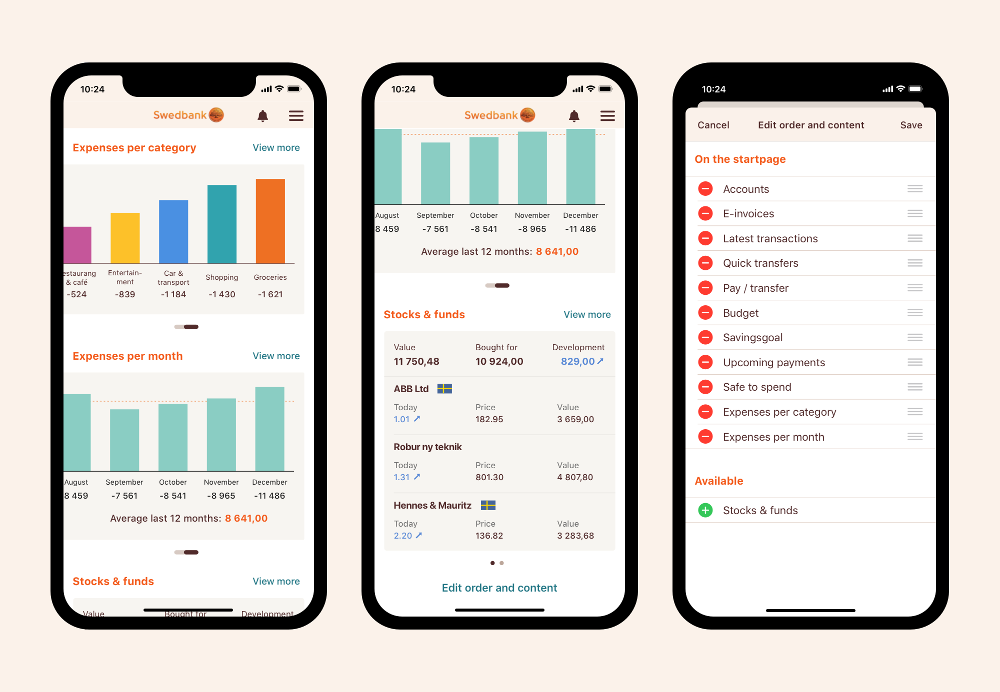
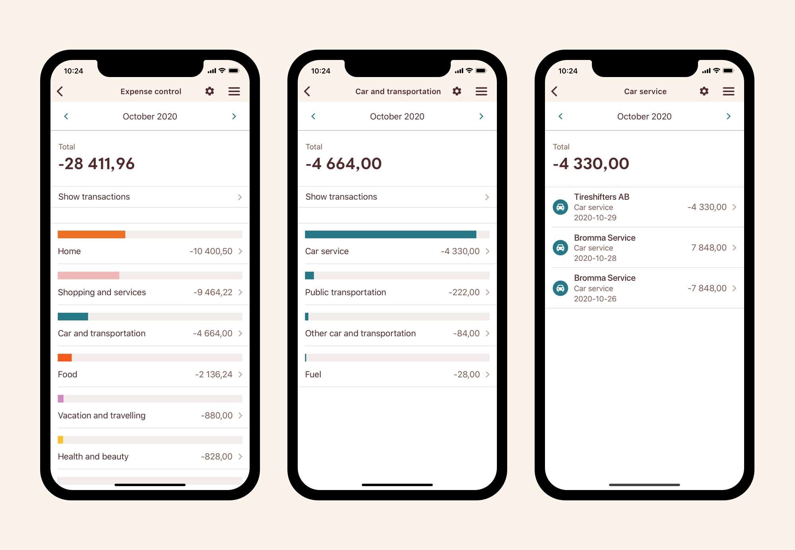
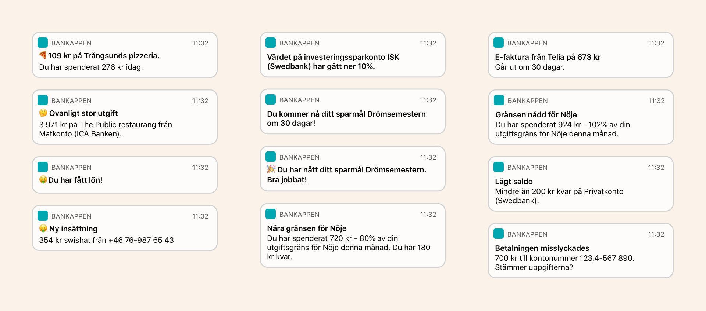

Swedbank
Role: Project lead, UX, design research
Team: Sofia Larsson, Rosa Gudjonsdottir, Lina Gauffin, Sebastian Söderback, Lars Svennbeck
Swedbank is facing increased competition from startups and other banks to keep the customer relationship. We need to improve the bank app to keep the customers.
We started with interviews to identify the users needs and goals. Our focus was on daily finances since that is where the majority of interactions happen. Our goal was that users prefer our app over our competitors for daily finances. We learned that there were a few things everyone wanted to see first thing. Accounts, latest transactions, e-invoices and payments/transfers. After that, different people wanted different things.
So we arrived at a new modular startpage where you can add, remove and reorder modules.

We also redesigned a section of the app for expense insights to be more helpful in seeing spending patterns and comparing months.
Users told us that the old categorization was too coarse and often made mistakes. So we trained a new categorization engine that was more acurate and granular. Going from 31 to 91 categories.

Process
We ran a series of semi structured interviews with users to understand their needs and goals around their everyday finances. We asked about what they do during a day and a month, what they want to get better at, what they worry about and what they want help with.
Now we knew about the users needs and goals. So we created different directions for how the startpage could be structured, concepts and notifications to address specific needs. We also explored our tone of voice.
We set up a user test where they got to choose concepts and build their own startpage. They also chose what notifications they wanted, if any.

They told us what the liked and didn't like about the differerent structural directions of the startpage.
We also learned that they wanted us to be more warm and casual in our tone of voice. Even emojjis were okay 👍 although they didn't want us to go too crazy; 🤑.
We arrived at a modular structure since people had a few things in common and a few things that differed. We built a prototype that we tested with users.

We iterated based on the learnings from the test.
We explored different directions for the visual design in parallel and then nailed down the final details.
After shipping, we measure to see if we're reaching our goals.